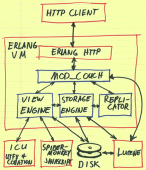

Apache CouchDB
- Base NoSQL orientée document ⇒ sans schéma
- Similaire à MongoDB
- Stockage au format JSON
- Accès REST (uniquement)
- Vues par Map/Reduce écrites en JavaScript (ou PHP, Ruby, Python, Erlang)
- Encourage la réplication (db locale ↔ db distante)
- Issue de Lotus Notes (documents, réplication,...)
Architecture
- Construit sur Erlang dans un but de tourner sur des petites configurations (Android, BrowserCouch, JsCouch)
- "Highly concurrent"
- Réplication N-maître
Exemples d'utilisation
- Ubuntu :
- base par utilisateur avec les données et préférences d'applications (contacts, bookmarks, TomBoy, etc)
- synchronisation via Ubuntu One
- Sauce Labs : "in the cloud cross-browser testing with Selenium"
- Une idée intéressante : DNS en CouchDB
- Et des dizaines d'autres références : CouchDB in the wild
Données
Objet JSON :
{
"_id": "3c64f8626e3cde009c110ac984e3d2fe",
"_rev": "1-0a81337cc29f445ebf7fddaa4014abc3",
"tags": [ "Amis" ],
"lastname": "DUPONT",
"firstname": "Emile",
"birthdate": "1978-01-13",
"contacts": [
{ "type": "Portable", "value": "06 75 47 61 00" },
{ "type": "email", "value": "dupont@herge.fr" }
],
"tags": ["amis","pro"]
}
- Peut contenir des attachements binaires (fichiers)
- Notion de révisions (et donc de conflits)
Accès REST
- Create → PUT /db/id
- Read → GET /db/id
- Update → POST /db/id
- Delete → DELETE /db/id
Démo : CouchDB, premiers pas
curl http://127.0.0.1:5984/
{"couchdb":"Welcome","version":"0.10.1"}
curl -X GET http://127.0.0.1:5984/_all_dbs
[]
curl -X PUT http://127.0.0.1:5984/db
{"ok":true}
curl -X GET http://127.0.0.1:5984/_all_dbs
[db]
curl -X DELETE http://127.0.0.1:5984/db
{"ok":true}
CouchDB Http Requestor
Vues
- des documents, comme les données,
- plus précisément, des "designDocuments",
- définies par une fonction map,
- éventuellement définies par une fonction reduce.
Démo : tous les contacts
Map
function(doc) {
if (doc.lastname)
emit(doc.lastname, doc);
}
Démo : groupe de tags
Map
function(doc) {
if(doc.tags.length > 0) {
for(var idx in doc.tags) {
emit(doc.tags[idx], 1);
}
}
}
Reduce
function(v, tags) {
var sum=0;
for(var i=0; i < tags.length; i++)
sum += tags[i];
return sum;
}
Un exemple : GContact2
Stand-alone applications
http://jchrisa.net/cal/_design/cal/index.html
GET /cal/_design/cal/index.html HTTP/1.1
Host: jchrisa.net
User-Agent: Mozilla/5.0 (Windows; U; Windows NT 5.1; fr; rv:1.9.2.3) Gecko/20100401 Firefox/3.6.3
Accept: text/html,application/xhtml+xml,application/xml;q=0.9,*/*;q=0.8
[...]
HTTP/1.1 200 OK
Date: Thu, 06 May 2010 20:12:22 GMT
Server: CouchDB/0.10.0 (Erlang OTP/R13B)
Connection: close
[...]
Autres exemples...
D'autres façons de faire
- 1 base par utilisateur
- base répliquée au plus proche de son utilisation (chez le client, dans le navigateur)
- CouchDB = données + vues map/reduce + vues html
- utilisation offline
- base répliqués entre clients
- "p2p web" : CouchDB to the Edge, CouchDB on the web
Ressources
- http://couchdb.apache.org/
- CouchDB: The definitive guide (Livre O'Reilly complet)
- CouchDB to the Edge : slides, vidéos JsConf.us 2009 & JsConf.eu 2009
- @couchdb à suivre sur twitter
- http://www.couchdb-fr.net/ (User group Français)
- GContact2